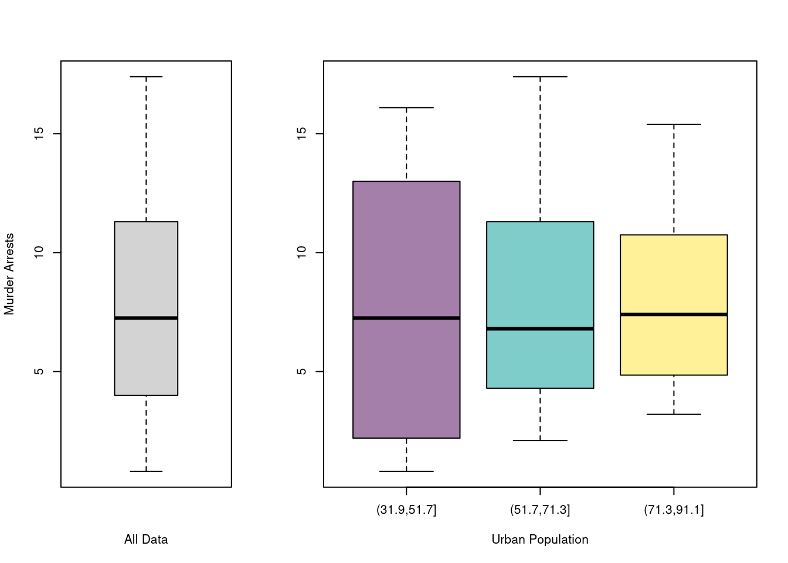

5 Data Analysis
Reading in
## Install R Data Package and Load in
install.packages('wooldridge')
library(wooldridge)
data('crime2')
data('crime4')
## Read in csv from online
dat_csv <- read.csv('http://www.stern.nyu.edu/~wgreene/Text/Edition7/TableF19-3.csv')
dat_csv <- as.data.frame(dat_csv)
## Read in csv from online
dat_stata <- haven::read_dta('https://www.ssc.wisc.edu/~bhansen/econometrics/DS2004.dta')
dat_stata <- as.data.frame(dat_stata)
## For More Introductory Econometrics Data, see
# https://www.ssc.wisc.edu/~bhansen/econometrics/Econometrics%20Data.zip
# https://pages.stern.nyu.edu/~wgreene/Text/Edition7/tablelist8new.htm
# R packages: wooldridge, causaldata, Ecdat, AER, ....Read in some historical data on crime in the US
## Murder Assault UrbanPop Rape
## Alabama 13.2 236 58 21.2
## Alaska 10.0 263 48 44.5
## Arizona 8.1 294 80 31.0
## Arkansas 8.8 190 50 19.5
## California 9.0 276 91 40.6
## Colorado 7.9 204 78 38.7## Murder Assault UrbanPop Rape
## Min. : 0.800 Min. : 45.0 Min. :32.00 Min. : 7.30
## 1st Qu.: 4.075 1st Qu.:109.0 1st Qu.:54.50 1st Qu.:15.07
## Median : 7.250 Median :159.0 Median :66.00 Median :20.10
## Mean : 7.788 Mean :170.8 Mean :65.54 Mean :21.23
## 3rd Qu.:11.250 3rd Qu.:249.0 3rd Qu.:77.75 3rd Qu.:26.18
## Max. :17.400 Max. :337.0 Max. :91.00 Max. :46.005.1 Cleaning Data
Data transformation is often necessary before analysis, so remember to be careful and check your code is doing what you want. (If you have large datasets, you can always test out the code on a sample.)
## Function to Create Sample Datasets
make_noisy_data <- function(n, b=0){
## Simple Data Generating Process
x <- seq(1,10, length.out=n)
e <- rnorm(length(x), mean=0, sd=10)
y <- b*x + e
## Obervations
xy_mat <- data.frame(ID=seq(x), x=x, y=y)
return(xy_mat)
}
## Two simulated datasets
dat1 <- make_noisy_data(6)
dat2 <- make_noisy_data(6)
## Merging data in long format
dat_merged_long <- rbind( cbind(dat1,DF=1), cbind(dat2,DF=2))Now suppose we want to transform into long format
## Merging data in wide format, First Attempt
dat_merged_wide <- cbind( dat1, dat2)
names(dat_merged_wide) <- c(paste0(names(dat1),'.1'), paste0(names(dat2),'.2'))
## Merging data in wide format, Second Attempt
## higher performance
dat_merged_wide2 <- merge(dat1, dat2,
by='ID', suffixes=c('.1','.2'))
## CHECK they are the same.
identical(dat_merged_wide, dat_merged_wide2)## [1] FALSE## Merging data in wide format, Third Attempt
## more flexibility
dat_melted <- reshape2::melt(dat_merged_long, id.vars=c('ID', 'DF'))
dat_merged_wide3 <- reshape2::dcast(dat_melted, ID~DF+variable)
## Merging data in wide format, Fourth Attempt
## highest performance but with new type of object
library(data.table)
dat_merged_longDT <- as.data.table(dat_merged_long)
dat_melted <- data.table::melt(dat_merged_longDT, id.vars=c('ID', 'DF'))
dat_merged_wide4 <- data.table::dcast(dat_melted, ID~DF+variable)
## dat_merged_wide4 <- as.data.frame(dat_merged_wide4)
## CHECK they are the same.
identical(dat_merged_wide3, dat_merged_wide4)## [1] FALSEOften, however, we ultimately want data in long format
## Merging data in long format, Second Attempt
dat_melted2 <- data.table::melt(dat_merged_wide4, measure=c("1_x","1_y","2_x","2_y"))
melt_vars <- strsplit(as.character(dat_melted2$variable),'_')
dat_melted2$DF <- sapply(melt_vars, `[[`,1)
dat_melted2$variable <- sapply(melt_vars, `[[`,2)
dat_merged_long2 <- data.table::dcast(dat_melted2, DF+ID~variable)
dat_merged_long2 <- as.data.frame(dat_merged_long2)
## CHECK they are the same.
identical( dat_merged_long2, dat_merged_long)## [1] FALSE## Further Inspect
dat_merged_long2 <- dat_merged_long2[,c('ID','x','y','DF')]
mapply( identical, dat_merged_long2, dat_merged_long)## ID x y DF
## TRUE TRUE TRUE FALSEFor more tips, see https://raw.githubusercontent.com/rstudio/cheatsheets/main/data-import.pdf and https://cran.r-project.org/web/packages/data.table/vignettes/datatable-reshape.html
5.2 Static Plots
5.2.1 Histograms
Histograms Summarize Distributions. Easy to show data splits. Can glue together to convey more information all at once
par(mfrow=c(1,2))
## All Data
xbks <- seq(min(USArrests$Murder), max(USArrests$Murder), length.out=10)
hist(USArrests$Murder, main='All Data', xlab='Murder Arrests', breaks=xbks)
## Split Data by Urban Population above/below mean
u <- mean(USArrests$UrbanPop)
m1 <- USArrests[USArrests$UrbanPop<u,'Murder']
m2 <- USArrests[USArrests$UrbanPop>=u,'Murder']
cols <- c(rgb(0,0,1,.5), rgb(1,0,0,.5))
hist(m1, col=cols[1], breaks=xbks, xlab='Murder Arrests', main='Split Data')
hist(m2, add=T, col=cols[2], breaks=xbks)
legend('topright', col=cols, pch=15, bty='n',
title='% Urban Pop.', legend=c('Above Mean', 'Below Mean'))
Sometimes it is better to make separate figures for each data split
par(fig=c(0,1,0,0.5), new=F)
hist(USArrests$Murder, breaks=xbks, main='All Data', xlab='Murder Arrests')
par(fig=c(0,.5,0.5,1), new=TRUE)
hist(m1, breaks=xbks, col=rgb(0,0,1,.5),
main='Urban Pop >= Mean', xlab='Murder Arrests')
par(fig=c(0.5,1,0.5,1), new=TRUE)
hist(m2,breaks=xbks, col=rgb(1,0,0,.5),
main='Urban Pop < Mean', xlab='Murder Arrests')
For more histogram visuals, see https://r-graph-gallery.com/histogram.html
5.2.2 Boxplots
Boxplots show median, interquartile range, and outliers. As with histograms, you can also split data into groups and glue together
layout( t(c(1,2,2)))
boxplot(USArrests$Murder, main='',
xlab='All Data', ylab='Murder Arrests')
## 3 Groups with even spacing
USArrests$UrbanPop_cut <- cut(USArrests$UrbanPop,3)
boxplot(Murder~UrbanPop_cut, USArrests,
main='', col=hcl.colors(3,alpha=.5),
xlab='Urban Population', ylab='')
5.2.3 Scatterplots
Scatterplots are used frequently to summarize the relationship between two variables. They can be enhanced in several ways.
Fit Lines and Color You can add regression lines (and confidence intervals). As a default, use semi-transparent points to see where your observations are concentrated. You can also use color to distinguish subsets.
## High Assault Areas
cols <- ifelse(USArrests$Assault>median(USArrests$Assault), rgb(1,0,0,.5), rgb(0,0,1,.5))
## Scatterplot
plot(Murder~UrbanPop, USArrests, pch=16, col=cols)
## Add the line of best fit for pooled data
## Could also do separately for each data split
reg <- lm(Murder~UrbanPop, data=USArrests)
abline(reg, lty=2)
## Can Also Add Confidence Intervals
## https://rpubs.com/aaronsc32/regression-confidence-prediction-intervalsYour first plot is typically standard. For others to easily comprehend your work, you must polish the plot.
## Data Generating Process
x <- seq(1, 10, by=.0002)
e <- rnorm(length(x), mean=0, sd=1)
y <- .25*x + e
xy_dat <- data.frame(x=x, y=y)
## Plot
par(fig=c(0,1,0,0.9), new=F)
plot(y~x, xy_dat, pch=16, col=rgb(0,0,0,.05), cex=.5,
xlab='', ylab='') ## Format Axis Labels Seperately
mtext( 'y=0.25 x + e\n e ~ standard-normal', 2, line=2.2)
mtext( expression(x%in%~'[0,10]'), 1, line=2.2)
abline( lm(y~x, data=xy_dat), lty=2)
title('Plot with good features and excessive notation', adj=0)
## Outer Legend (https://stackoverflow.com/questions/3932038/)
outer_legend <- function(...) {
opar <- par(fig=c(0, 1, 0, 1), oma=c(0, 0, 0, 0),
mar=c(0, 0, 0, 0), new=TRUE)
on.exit(par(opar))
plot(0, 0, type='n', bty='n', xaxt='n', yaxt='n')
legend(...)
}
outer_legend('topright', legend='single data point',
title='do you see the normal distribution?',
pch=16, col=rgb(0,0,0,.1), cex=1, bty='n')
Can export figure with specific dimensions
For plotting math, see https://astrostatistics.psu.edu/su07/R/html/grDevices/html/plotmath.html https://library.virginia.edu/data/articles/mathematical-annotation-in-r
For exporting options, see ?pdf.
For saving other types of files, see png("*.png"), tiff("*.tiff"), and jpeg("*.jpg")
Marginal distributions
par(fig=c(0,0.8,0,0.8), new=F)
plot(Murder~UrbanPop, USArrests, pch=16, col=rgb(0,0,0,.5))
par(fig=c(0,0.8,0.55,1), new=TRUE)
boxplot(USArrests$Murder, horizontal=TRUE, axes=FALSE)
par(fig=c(0.65,1,0,0.8),new=TRUE)
boxplot(USArrests$UrbanPop, axes=FALSE)
## https://www.r-bloggers.com/2011/06/example-8-41-scatterplot-with-marginal-histograms/
## Setup Plot
layout( matrix(c(2,0,1,3), ncol=2, byrow=TRUE),
widths=c(4/5,1/5), heights=c(1/5,4/5))
## Scatterplot
par(mar=c(4,4,1,1))
plot(Murder~UrbanPop, USArrests, pch=16, col=rgb(0,0,0,.5))
## Add Marginals
par(mar=c(0,4,1,1))
xhist <- hist(USArrests$UrbanPop, plot=FALSE)
barplot(xhist$counts, axes=FALSE, space=0)
par(mar=c(4,0,1,1))
yhist <- hist(USArrests$Murder, plot=FALSE)
barplot(yhist$counts, axes=FALSE, space=0, horiz=TRUE)
For plotting marginals, see https://r-graph-gallery.com/74-margin-and-oma-cheatsheet.html and https://jtr13.github.io/cc21fall2/tutorial-for-scatter-plot-with-marginal-distribution.html
5.3 Interactive Plots
Especially for data exploration, your plots can also be interactive via https://plotly.com/r/. For more details, see https://plotly-r.com/
Histograms https://plotly.com/r/histograms/
u <- mean(USArrests$UrbanPop)
m1 <- USArrests[USArrests$UrbanPop<u,'Murder']
m2 <- USArrests[USArrests$UrbanPop>=u,'Murder']
fig <- plot_ly(alpha=0.6,
hovertemplate="%{y}")
fig <- fig %>% add_histogram(m1, name='< Mean')
fig <- fig %>% add_histogram(m2, name='>= Mean')
fig <- fig %>% layout(barmode="stack") ## barmode="overlay"
fig <- fig %>% layout(
title="Crime and Urbanization in America 1975",
xaxis = list(title='Murders Arrests per 100,000 People'),
yaxis = list(title='Number of States'),
legend=list(title=list(text='<b> Urban Pop. </b>'))
)
figBoxplots https://plotly.com/r/box-plots/
USArrests$ID <- rownames(USArrests)
fig <- plot_ly(USArrests, y=~Murder, color=~cut(UrbanPop,4),
alpha=0.6, type="box",
pointpos=0, boxpoints = 'all',
hoverinfo='text',
text = ~paste('<b>', ID, '</b>',
"<br>Urban :", UrbanPop,
"<br>Assault:", Assault,
"<br>Murder :", Murder))
fig <- plotly::layout(fig,
showlegend=FALSE,
title='Crime and Urbanization in America 1975',
xaxis = list(title = 'Percent of People in an Urban Area'),
yaxis = list(title = 'Murders Arrests per 100,000 People'))
figScatterplots https://plotly.com/r/bubble-charts/
## Simple Scatter Plot
#plot(Assault~UrbanPop, USArrests, col=grey(0,.5), pch=16,
# cex=USArrests$Murder/diff(range(USArrests$Murder))*2,
# main='US Murder arrests (per 100,000)')
# Scatter Plot
USArrests$ID <- rownames(USArrests)
fig <- plotly::plot_ly(
USArrests, x = ~UrbanPop, y = ~Assault,
mode='markers',
type='scatter',
hoverinfo='text',
text = ~paste('<b>', ID, '</b>',
"<br>Urban :", UrbanPop,
"<br>Assault:", Assault,
"<br>Murder :", Murder),
color=~Murder,
marker=list(
size=~Murder,
opacity=0.5,
showscale=T,
colorbar = list(title='Murder Arrests (per 100,000)')))
fig <- plotly::layout(fig,
showlegend=F,
title='Crime and Urbanization in America 1975',
xaxis = list(title = 'Percent of People in an Urban Area'),
yaxis = list(title = 'Assault Arrests per 100,000 People'))
fig